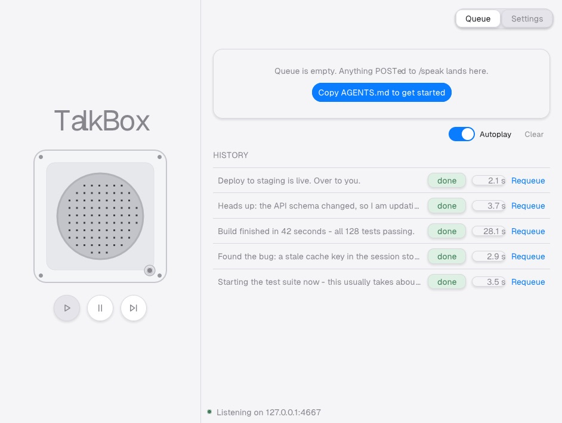
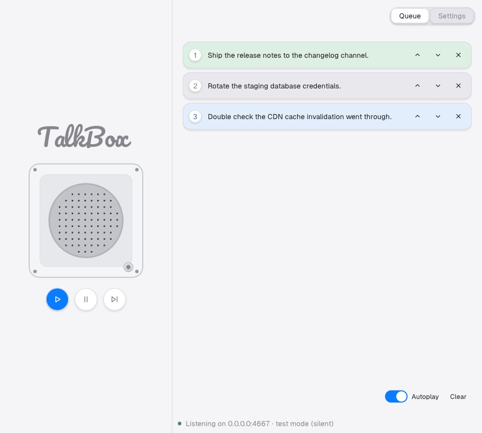

TalkBox v2's two-pane appliance layout, matched against the "TalkBox v2.dc.html" design render. Everything lives in ONE window now — Settings is a tab, not a separate window like the pre-v2 design had.


| Left | Speaker bay (336px, fixed): wordmark, plate + LED, 44px round transport. Also the window's drag surface. |
|---|---|
| Top-right | Queue / Settings segmented tabs. |
| Queue view | Now-speaking OR Reply-needed card (mutually exclusive) → pending pillars (scrolls) or the empty state → Autoplay switch + Clear, right-aligned → HISTORY (last 8, link-style Requeue). |
| Settings view | SPEECH / SERVER / GENERAL / REPLIES cards, scrolls; speaker health + Restart at the bottom. |
| Bottom | Status bar: green dot + one listening line only (no queued-count/note clutter — those live in the window content itself). |
1024×664 at the design's reference size; resizable, position/size restored across launches. There is no quick-entry field — v2 removed it (agent-first: enqueue via REST, tray Reply, or history Requeue). More live captures under ../screenshots/ (reply-composer.jpg, settings.jpg).